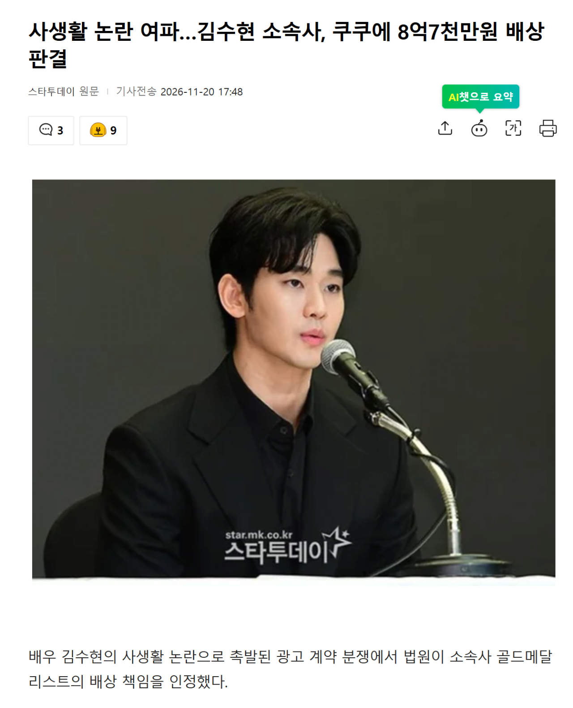

20일 서울중앙지법 민사합의25부(권기만 부장판사)는
쿠쿠전자와 쿠쿠홈시스, 쿠쿠홈시스의 말레이시아 법인 쿠쿠인터내셔널 버하드가 김수현과 소속사
골드메달리스트를 상대로 제기한 20억원대 손해배상 소송에서 원고 일부 승소 판결을 내렸다.
재판부는 골드메달리스트가 쿠쿠전자에 약 2억6000만원, 쿠쿠홈시스에 약 6억1000만원을 각각 지급해야 한다고 판단했다.
이에 따라 소속사가 부담해야 할 배상액은 총 8억7000만원이다. 반면 쿠쿠 측이 김수현 개인을 상대로 제기한 손해배상 청구는 기각했다.
이번 소송은 지난해 초 김수현이 고(故) 김새론과 미성년 시절부터 교제했다는 의혹에 휩싸이면서 불거졌다.
여론이 악화하자 쿠쿠 측은 김수현의 광고를 중단하고 손해배상 청구 소송을 제기했다.
김수현은 약 10년간 쿠쿠전자의 전속 모델로 활동해 왔다.
야 이게... 복잡하네
결론적으로 김새론 미성년 당시 교제는 인정되지 않았지만, 사회적 물의가 될 수 있는 구설수에 오른 것 만으로도 배상책임은 생긴다는 거고 와 어렵다